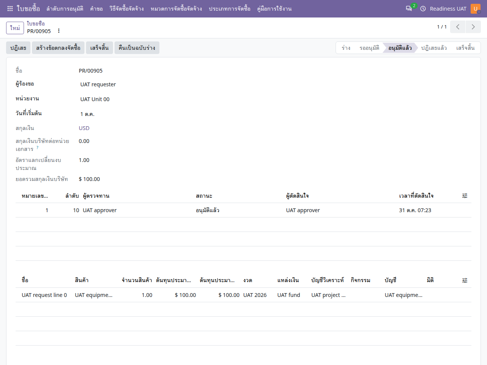

คู่มือการใช้งาน
ใบขอซื้อ
สร้างคำขอ ระบุแหล่งงบ ส่งตรวจ และติดตามการนำไปจัดซื้อหรือเบิกค่าใช้จ่าย
ไม่พบข้อความ ลองใช้คำอื่นหรือล้างคำค้นหา
เริ่มใช้งานและอ่านหน้าจอ
เปิดแอปจากเมนูหลัก แล้วเลือก คู่มือการใช้งาน คู่มือเปิดในแท็บใหม่เพื่อให้ดูพร้อมหน้าทำงานได้ เลือกแอปอื่นจากรายการด้านซ้าย หรือค้นหาคำในคู่มือนี้ และใช้ปุ่มพิมพ์ / บันทึก PDF เมื่อต้องการสำเนา
- ตรวจบริษัทที่มุมขวาบนและหน่วยงานในเอกสารก่อนสร้างหรืออนุมัติ เมนูและปุ่มขึ้นกับสิทธิ์ของบัญชี
- หลังแก้ข้อมูล ให้ใช้ปุ่มบันทึก / ไอคอนบันทึกตามที่แบบฟอร์มแสดง แล้วตรวจสถานะและเลขเอกสารก่อนออกจากหน้า
- ภาพประกอบเป็นข้อมูลจำลอง ชื่อรายการ ภาษา หรือเลขเอกสารอาจต่างจากบัญชีของคุณ ตัวเลขในภาพไม่ใช่ค่าที่ต้องกรอก
- ข้อความผิดเงื่อนไขให้จดเลขเอกสารและข้อความที่แสดง ส่งให้ผู้รับผิดชอบงานตรวจ อย่าส่งรหัสผ่านหรือข้อมูลเข้าสู่ระบบ
- ถ้าคู่มือเปิดแล้วภาพหรือภาษาเก่าค้าง ให้บันทึกงานในหน้าระบบก่อน แล้วรีเฟรชแท็บคู่มือ
ลำดับงานใบขอซื้อ
- ร่าง
- ส่งคำขอ
- ตรวจสอบ / อนุมัติตามลำดับ
- นำไปจัดซื้อหรือรายจ่าย
- ติดตามและปิดงาน
สิทธิ์ส่ง ตรวจสอบ และอนุมัติขึ้นกับบทบาทและลำดับตรวจทานในบริษัทนั้น ผู้ขอซื้อไม่ควรใช้บัญชีผู้ดูแลแทนผู้อนุมัติ
สร้างใบขอซื้อ
ใบขอซื้อ → คำขอ → ใหม่
- ตรวจบริษัท หน่วยงาน ผู้ขอ และวันที่เริ่มต้นก่อนเพิ่มรายการ
- ระบุสินค้า/บริการ จำนวน ราคาประมาณการ และสกุลเงินตามเอกสารต้นทาง
- ในแต่ละบรรทัด เลือกงวด แหล่งเงิน บัญชีวิเคราะห์ บัญชีงบประมาณ และกิจกรรมเมื่อใช้งาน
- เลือกวิธีหรือประเภทจัดซื้อและเส้นทางดำเนินงานตามที่หน่วยงานกำหนด แล้วบันทึก
- ตรวจยอดรวมและข้อมูลข้างต้นก่อนกดส่ง ข้อมูลที่ถูกผูกพันแล้วมีข้อจำกัดการแก้ไข

ส่ง ตรวจสอบ และอนุมัติ
- ผู้ขอกด ส่ง แล้วตรวจว่าเอกสารเข้าสู่รออนุมัติ
- ผู้ที่ได้รับหน้าที่ตรวจสอบเปิดรายการ ดูข้อมูลรายการและงบประมาณ แล้วใช้ปุ่มตรวจสอบเมื่อแบบฟอร์มกำหนด
- ผู้อนุมัติเปิดตารางการตรวจทาน ตรวจว่าถึงลำดับของตน แล้วกดอนุมัติหรือปฏิเสธ
- หลังอนุมัติ ตรวจสถานะและผู้ดำเนินการ ไม่ตีความการกดตรวจสอบว่าทำหน้าที่แทนการอนุมัติทุกลำดับแล้ว
นำคำขอไปดำเนินงานต่อ
- คำขอที่อนุมัติแล้วอาจใช้สร้างข้อตกลงจัดซื้อหรือถูกนำไปเชื่อมกับใบเสนอราคา/ใบสั่งซื้อโดยเจ้าหน้าที่จัดซื้อ
- เส้นทางรายจ่ายใช้ปุ่มสร้างรายจ่ายเมื่อกำหนดเส้นทางดังกล่าว ตรวจลิงก์คำขอต้นทางในเอกสารที่สร้าง
- เปิดเอกสารที่ระบบเชื่อมให้และตรวจจำนวนกับงบประมาณก่อนยืนยัน ไม่สร้างเอกสารปลายทางซ้ำหากมีลิงก์อยู่แล้ว
- ติดตามรายการจนจบ แล้วใช้ปุ่มเสร็จสิ้นตามหน้าที่และเงื่อนไขที่ระบบตรวจ
ปฏิเสธหรือกลับเป็นร่าง
ใช้ปฏิเสธหรือกลับเป็นร่างตามสิทธิ์ หากมีใบสั่งซื้อ รายจ่าย หรือรายการลงบัญชีที่ใช้งานอยู่ ระบบอาจไม่อนุญาต ให้ตรวจเอกสารปลายทางก่อน รอบการตรวจทานเดิมยังเป็นหลักฐาน ไม่แก้ผู้อนุมัติหรือวันที่ในตารางด้วยมือ
คำถามที่พบบ่อย
| อาการ | ตรวจอย่างไร |
|---|---|
| ส่งแล้วงบประมาณไม่พอ | ตรวจงวด มิติ ราคา จำนวน และอัตราแปลงที่ใช้เทียบวงเงิน |
| มีปุ่มอนุมัติแต่กดไม่ได้ | ตรวจลำดับผู้ตรวจ สิทธิ์ และข้อจำกัดอนุมัติรายการตนเอง |
| ไม่พบหน่วยงาน | ตรวจบริษัทและการมอบหมายหน่วยงานของบัญชี |
| อยากเปลี่ยนสกุลเงิน | ทำในรายการร่างและตรวจผลต่อยอดและวงเงิน รายการที่มีเอกสารต่อเนื่องต้องให้ผู้รับผิดชอบพิจารณาต้นทางร่วมกัน |